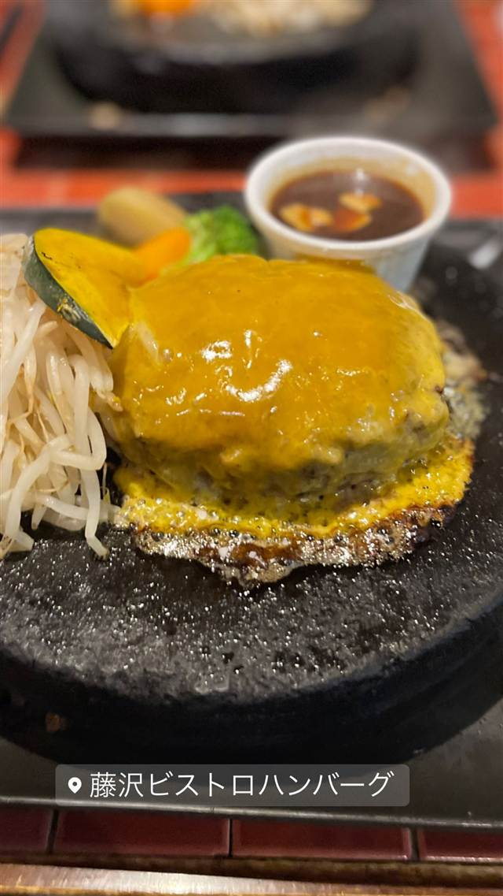
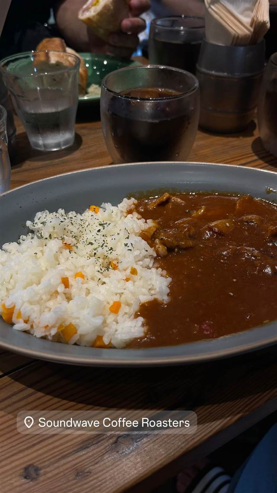
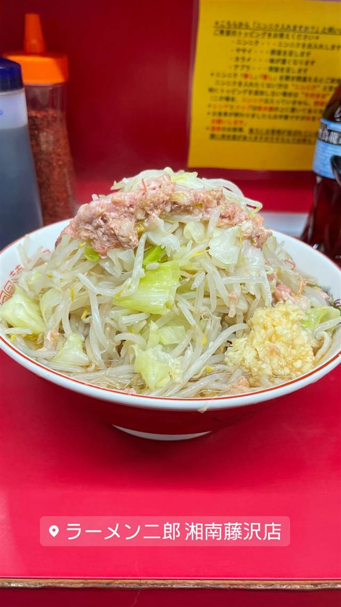
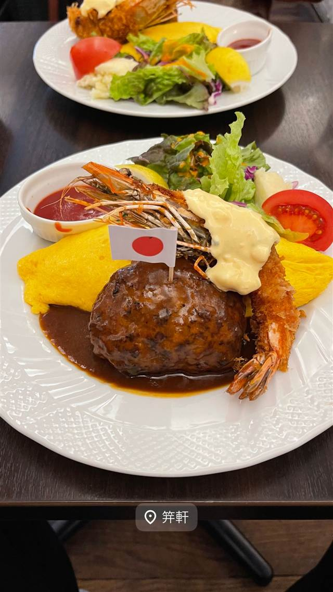
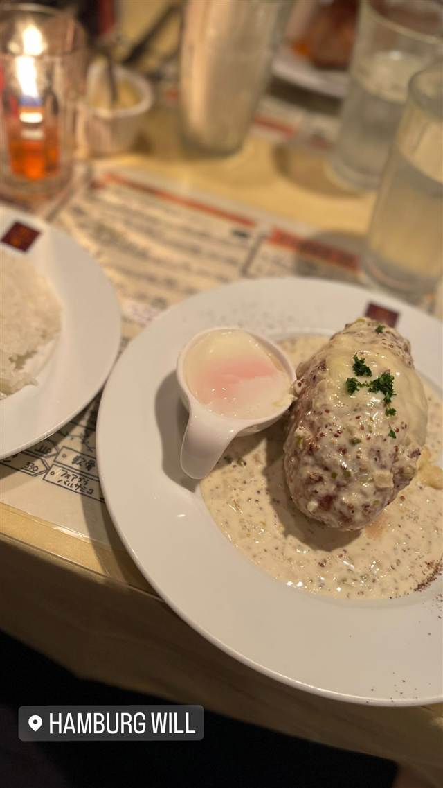
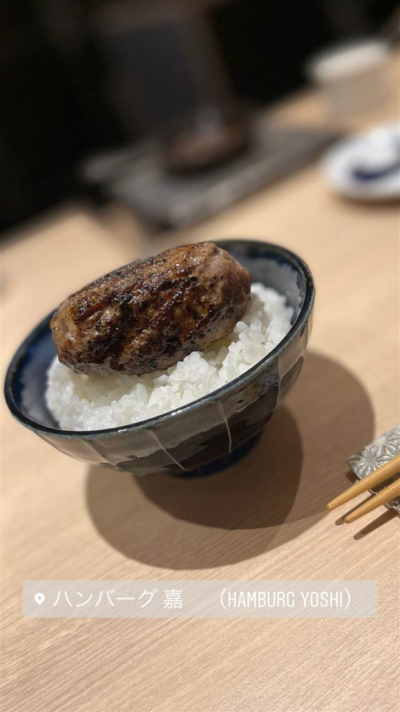

藤沢ビストロハンバーグ
富士の溶岩石で焼く、国際線ファーストクラスの尾崎牛ハンバーグ
藤沢ビストロハンバーグ
藤沢駅近くの地下にあるビストロで、A4・A5ランクの黒毛和牛「尾崎牛」を富士の溶岩石にのせレアで提供する石焼ハンバーグが名物。2011年の開店以来、地元で愛される名店。
TRIVIA
豆知識
- 使用する尾崎牛は国際線ファーストクラスでも提供される高級ブランド牛
- 熱した富士山の溶岩石にのせて客が自分で焼き加減を調整できる
REVIEWS
世間の評判
3.50食べログ
溶岩プレートで仕上げる肉汁ハンバーグ
- 国産黒毛和牛の肉汁と溶岩プレートで好みに仕上げられる点を評価する声が多い
- 手頃な価格で質の高いハンバーグを楽しめると評価する人が多い
- 店内が薄暗く煙がこもりやすいという指摘がある
- 人気店で提供まで30分ほど待つこともあるという声もある
食べログ
| 創業 | 2011年12月5日開店 |
|---|---|
| 看板 | 石焼ハンバーグ(黒毛和牛A4・A5ランクを100%使用) |
| こだわり | 富士の溶岩石にのせレア状態で提供し、遠赤外線効果で好みの焼き加減に仕上げられる。国際線ファーストクラスでも供される「尾崎牛」を使用 |
| どこから | 東京から1時間ほど |
| 予算 | 夜 ¥2,000～¥2,999 |
| 場所 | 藤沢駅 神奈川県藤沢市(藤沢駅南口周辺、番地未確認) |
| メモ | 藤沢駅近くの地下1階(六光会館ビルB1F)。ソースは8種類から選択可 |
食べたもの：石焼ハンバーグ
NEARBY
近い店・同じ系統の店
-

コーヒー 藤沢駅徒歩6分 Soundwave Coffee Roasters(サウンドウェーブ コーヒー ロースターズ) 豆ごとに焙煎方法を変え、焙煎後7日以内の自家焙煎スペシャルティコーヒー 昼 ～¥999 夜 ～¥999 -
 ルーフトップ・ラウンジ 藤沢駅南口徒歩2分
カフェダイニング 8LOUNGE(エイトラウンジ)藤沢
アメリカ製ヴィンテージトレーラーのエアストリームを個室として使える
夜 ¥2,000～¥2,999
ルーフトップ・ラウンジ 藤沢駅南口徒歩2分
カフェダイニング 8LOUNGE(エイトラウンジ)藤沢
アメリカ製ヴィンテージトレーラーのエアストリームを個室として使える
夜 ¥2,000～¥2,999
-

二郎系(直系) 藤沢駅 ラーメン二郎 湘南藤沢店 亀戸店店主の実兄が営む二郎、非乳化系に変化した一杯 昼 ¥1,000～¥1,999 夜 ¥1,000～¥1,999 -

ハンバーグ 広尾（4番出口徒歩約5分） 麻布笄軒 広尾本店 昭和42年まで実在した旧町名「麻布笄町」にちなむ洋食店 昼 ¥1,000～¥1,999 夜 ¥2,000～¥2,999 -

ハンバーグ 新宿御苑前 Hamburg Will（ハンバーグ ウィル） 岩手県産ブランド豚を100%使用、6種のパテから選べるハンバーグ 昼 ¥1,000～¥1,999 夜 ¥3,000～¥3,999 -

ハンバーグ 明治神宮前駅 ハンバーグ嘉 (Hamburg Yoshi) 焼肉歴24年の店主が毎朝挽きたての肉を炭火で焼くハンバーグ 夜 ¥1,000～¥1,999